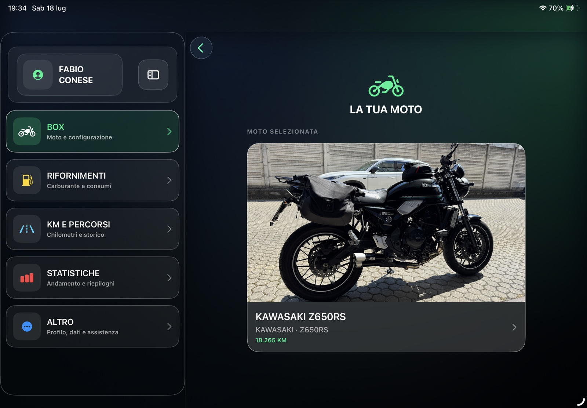
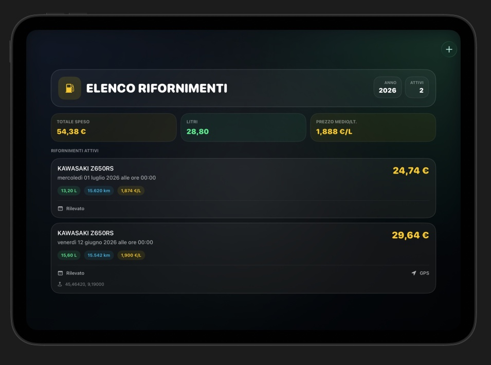
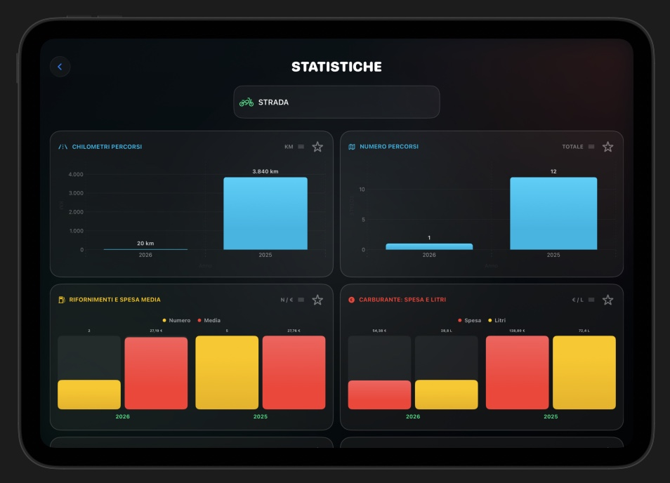
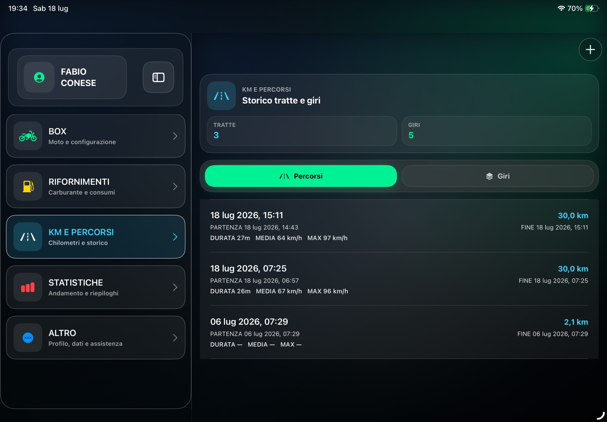

Vista più ampia
Più informazioni contemporaneamente, senza perdere ordine e leggibilità.
NeoGauge per iPad
La versione iPad sfrutta lo schermo più ampio con un menu sempre visibile e viste dedicate alla consultazione di rifornimenti, chilometri e statistiche. NeoGauge Plus aggiunge diario, fotografie e cartoline dei giri da condividere*.

Più informazioni contemporaneamente, senza perdere ordine e leggibilità.
Box, rifornimenti, chilometri, statistiche e altre impostazioni restano a portata di mano.
La moto e le sue informazioni seguono lo stesso modello condiviso con iPhone.
Schermate reali
Le viste sfruttano il formato orizzontale dell'iPad per confrontare e consultare i dati con maggiore respiro.



La Dashboard nasce su iPhone